“初一的饺子初二面，初三的饸饹往家转”，这是北方过年的习俗。南方，在大年初一早上，则是要吃一碗团圆美满的汤圆。
立春过后，就快到元宵节，也是要吃汤圆和元宵。您知道元宵和汤圆怎么做、怎么煮、怎么吃比较美味又健康吗？如果我们吃多了元宵和汤圆，应该怎么办呢？
元宵是摇出来的，是把馅儿放在干的糯米粉里面，然后不断地洒水，摇成圆形；而汤圆是包出来的，是把糯米粉先揉成面团，再包馅儿进去，搓出圆形。
元宵是有嚼头的，它比较干；汤圆吃起来是比较软糯的，还会流沙。
元宵是不能久放的，摇好之后得马上煮了吃了，如果放两天煮，它就不好吃了。元宵也不适合冷冻，否则会裂开，就没办法再煮了。
汤圆是揉过的面团包的，是可以冷冻的，我们在超市也非常容易买到一包一包、冷冻好的汤圆。
通常来说，元宵只有过年这几天才能吃到。元宵虽然吃起来没有汤圆的口感那么软糯细腻，但我们吃的就是它每年这个新鲜劲儿，是很让人向往的；速冻汤圆现在一年四季都能吃到，感觉大家好像不太稀罕了，过年还是在家自制汤圆更好吃。
不知您发现没有，超市里买来的速冻汤圆不会裂口，可是自己在家做的汤圆放到冰箱里速冻之后，往往容易裂开，这是什么原因呢？
原因就在于：超市里卖的速冻汤圆通常会加一点改良剂，以免汤圆裂口；而自己在家做汤圆的时候，是没有加任何添加剂的，所以容易裂开。
反过来讲，自己在家里做的汤圆是天然的，避开了改良剂和添加剂等问题。另外，我们自己在家做汤圆或者元宵时，对于馅儿的甜度是可以把握的。有些朋友觉得从超市买来的汤圆太甜了，吃起来有点烧心（胃灼热），那您就不妨自己来做。
其实，自己在家做汤圆或元宵也不是很难的事情，关键的问题就是要把馅儿和好，这样就能很容易地做出汤圆或元宵了。
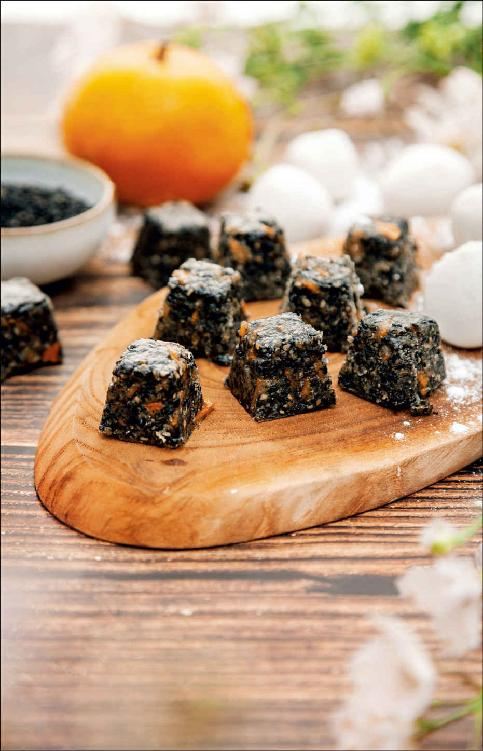
我来介绍一种我家做汤圆馅儿的配方。
这个配方里头用橘皮糖来代替做汤圆的糖，这样吃起来既不是很甜腻，又能防止汤圆吃多了以后滋腻生痰，吃起来也是很香的。
如果您冬天没有自己用红橘皮做橘皮糖，橘皮蜜饯也买不到的话，您就用红糖来代替，只是它没有防止生痰和止咳的功效了。
馅儿的配方是可以变化的，您可以把芝麻换成花生。花生要事先切碎，也是放炒锅里炒1分钟，跟橘皮糖一起搅拌，再加上化过的猪油一起搅拌均匀，压实，放到冰箱里冷藏。有些朋友可能不吃猪油，那您可以用黄油来代替。吃素的人可以用椰子油来代替。
馅儿和好后，就可以包出大约100个中等个头的汤圆了。
如果您自己在家摇元宵，就准备好糯米粉；如果您自己在家包汤圆，那就准备好两斤（1千克）糯米粉、半斤（250克）米粉（普通的大米粉）混合起来，正好可以包完和好的馅儿。
自制汤圆馅
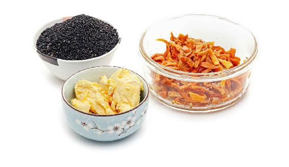
原料：黑芝麻250克，橘皮糖250克，猪油或黄油100克，开水50毫升。橘皮糖就是用冬天吃的红橘的皮做出来的糖，如果您自己没有做，可以去买一些橘皮糖蜜饯。
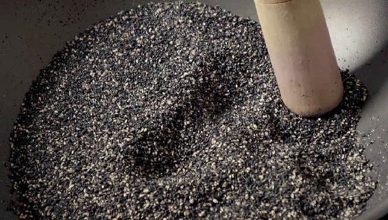
做法：
1. 把黑芝麻放在铁锅里炒1分钟，炒香，用擀面杖擀碎，也不用擀得非常细腻，有一点颗粒感也是可以的。
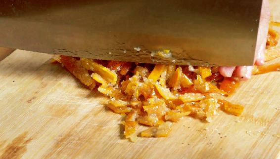
2. 把橘皮糖切成小丁，和擀好的芝麻一起拌匀，放到一个方形的饭盒里面。
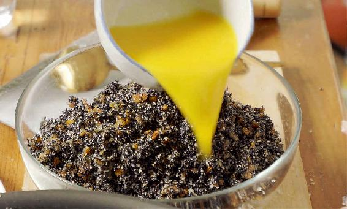
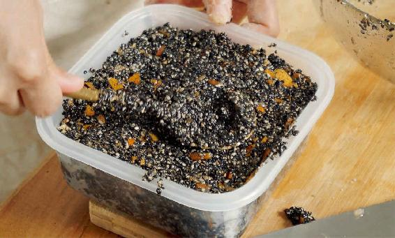
3. 用一点点开水把猪油（黄油）化开，倒到饭盒里，跟芝麻和橘皮糖搅拌均匀，再从上面压实、压平，然后放到冰箱冷藏半小时。
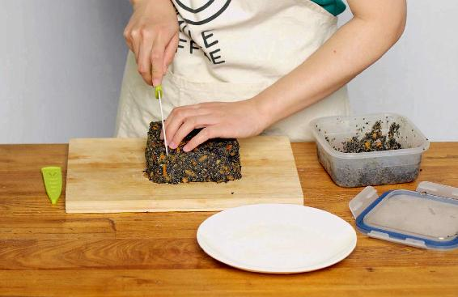
4. 等馅儿凝固后取出，用刀切成小方块儿，这时就可以用来包汤圆，或者做元宵了。
如果您想让自己包出来的汤圆更加细腻软糯的话，建议您用水磨的糯米粉，或者直接买水磨的糯米粉团，这种是已经做好的，是那种湿的水磨米粉团，用它来包汤圆效果会更好。
如果您家里有料理机，又愿意自己动手做，可以把糯米用水泡一晚上，第二天把水滗掉，然后把糯米放到料理机里打磨成浆，这样来做汤圆，味道也很不错。
用上面的方法做出来的家庭手工汤圆非常健康，首先汤圆粉没有加过改良剂，馅儿的甜度也比较适度，而且因为馅儿里用了橘皮糖，可以止咳化痰、消食解腻。
在元宵节，北方人会吃元宵，南方人会吃汤圆，但不管是元宵还是汤圆，它们都是糯米做的，所以比较难消化。
一些吃糯米难消化的朋友，一到元宵节就比较纠结，想吃元宵或汤圆，又怕吃多了以后不消化、不舒服。而且元宵和汤圆的馅儿比较甜腻，有些朋友吃了以后会伤脾胃、生痰湿，小朋友吃多了以后也可能会食积、咳嗽。
如果小朋友吃完汤圆喊胃胀、肚子痛，或者不舒服，大人可以用几瓣大蒜煮水给他喝下去，喝完之后，他就会舒服了。大蒜水可以非常有效地缓解吃完糯米后引起的饱胀感。
自制汤圆
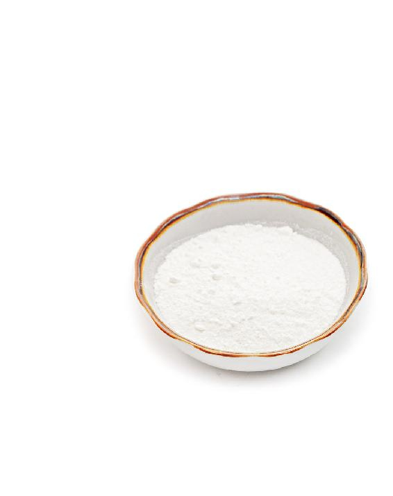
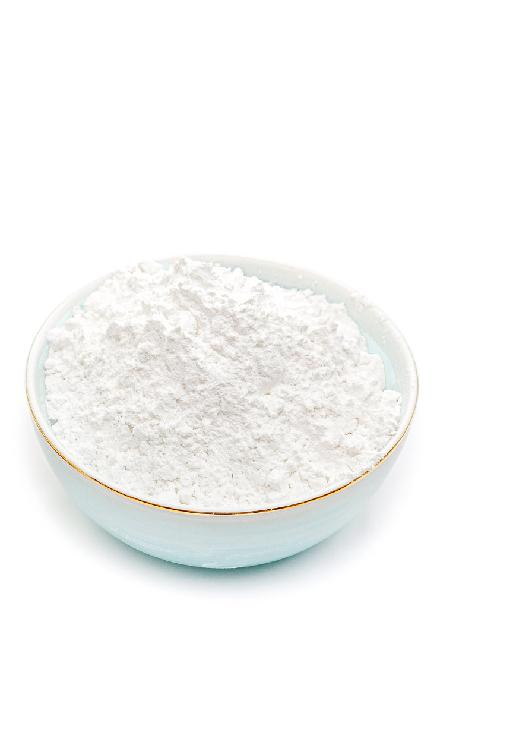
原料：两斤（1千克）糯米粉，半斤（250克）大米粉。
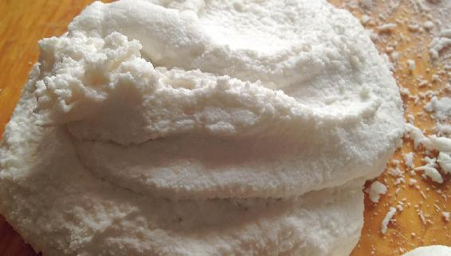
做法：
1. 用温水和糯米粉，不要揉得太干，表面要有一种很湿润、很黏手的感觉。不断地揉，越揉米粉团就越黏。
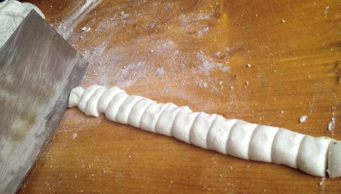
2. 揉到米粉团非常绵软之后，把它搓成长条。用刀切成一个一个的小剂子。
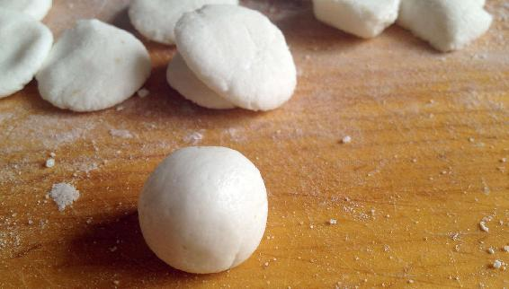
3. 把小剂子搓圆，放到手心压扁。放馅儿进去，包好搓成球形，这样汤圆就做好了。
如果想在元宵节里既能享受到元宵或汤圆的美味，又不伤脾胃，有一个秘诀：在煮汤圆的水里放入一块姜。
煮汤圆的水是有讲究的，多数朋友会用白水，其实我们只要在用白水煮汤圆前放一块带皮的生姜，就可以很好地化解吃完汤圆之后的肚子胀、难受，甚至胃痛等现象。
把生姜拍扁，冷水下锅，水开之后，再稍微多煮一会儿，然后放汤圆。注意：煮汤圆的水要“宽”，就是水要多，这样煮出来的汤圆，不容易黏在一起，也不容易裂开、露馅儿。
汤圆煮到它们都漂浮起来后就熟了，这时就可以关火。
如果您想要汤味更好，可以往汤里加一点红糖。这样煮好之后，不仅汤圆非常好吃，而且汤头的味道也很好。它就是姜糖水的味道，喝下去以后会让人觉得胃里暖暖的，可以很好地缓解吃完糯米之后的肚子胀等问题。
用这个方法来煮汤圆，不仅汤圆会被家里人吃光，而且连煮汤圆的水也会被大家抢喝光的，您不妨试一下。
如果想要更好的效果，可以在包汤圆的馅儿里放上橘皮糖，用它来代替馅里的糖。
还有一种能让汤圆更加好消化的方法，就是在家里自制汤圆或元宵的时候，不要用纯的糯米粉，而是要往里面加入一些大米粉。这样包出来的汤圆，不仅好消化，而且口感也更好。
注意：如果您一次包的汤圆比较多，先包好的汤圆要及时用保鲜膜盖上，不然在空气中晾的时间久了就会裂口。
有的朋友觉得自己揉不好做汤圆的米粉团，那您不妨试一下这个方法：从事先揉好的米粉团中，取出大约1/5，把它放进开水锅里煮，看到糯米粉团漂起来了就是熟了。
煮熟之后，把它跟之前的面团混合在一起再反复揉，让熟米粉团和生米粉团融合。因为熟米粉团非常黏，可以和生米粉团黏在一起，这样做出来的汤圆，口感会更加绵软、细腻。
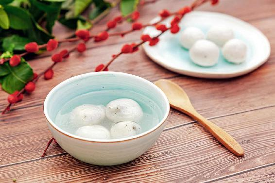
其实，每次吃汤圆的个数也反映了一个人脾胃的健康程度，脾胃越健康的人，汤圆吃得越多。比如我父亲，他是非常能吃汤圆的，一次能吃36个，当然，他的脾胃功能非常好，从来没有听过他说脾胃不舒服，更别提胃痛了，这些毛病都跟他绝缘。
平时脾胃比较虚弱的朋友，还有小朋友，吃汤圆时要特别注意限制汤圆的数量，因为小朋友的脾胃都比较娇嫩，如果吃得过多，容易腻住。
另外，吃元宵或汤圆的时候，记得一定要吃双数哟，这样才有吉利的好意头，比如，吃四个，就是四季平安；吃六个，就是六六大顺；吃八个，就是八方来财。
其实，“元”有开始、第一的意思，新年里的第一个月份就被称为元月；“宵”就是月圆之夜的意思。元宵合起来就是新年里第一个月圆之夜。新年开始的第一个月圆之夜，象征着团团圆圆，我们在这一天吃团团圆圆的元宵或汤圆，天上月圆，人间团圆，是非常应景的。
读者评论：汤圆里放生姜和红糖，真的不伤脾胃
夏天：现在我煮汤圆，都会放生姜和红糖，真的不伤脾胃，谢谢美女老师 。
允斌解惑：汤圆不适宜晚上吃
恬：老师，用陈皮和姜煮了速冻汤圆，不喝汤可以吗？
允斌：汤里有药效，不喝太可惜。
ANNA：晚上煮汤圆能放姜吗？
允斌：汤圆是早上吃的，不适宜晚上吃。
小清新绿：天气转冷，我爱煮甜酒汤圆吃，吃完全身暖烘烘的。小孩子可以吃用甜酒煮过的汤圆吗？
允斌：酒味煮散掉就可以。
放飞心情：老师，您说过红糖不能久煮，煮汤圆可以放红糖吗？
允斌：红糖可以后放。
娃哈哈：晚上吃汤圆能放陈皮吗？大爱陈皮，现在我脸上的小疙瘩没了，估计是陈皮的功劳。
允斌：放陈皮好，早上吃汤圆更好！